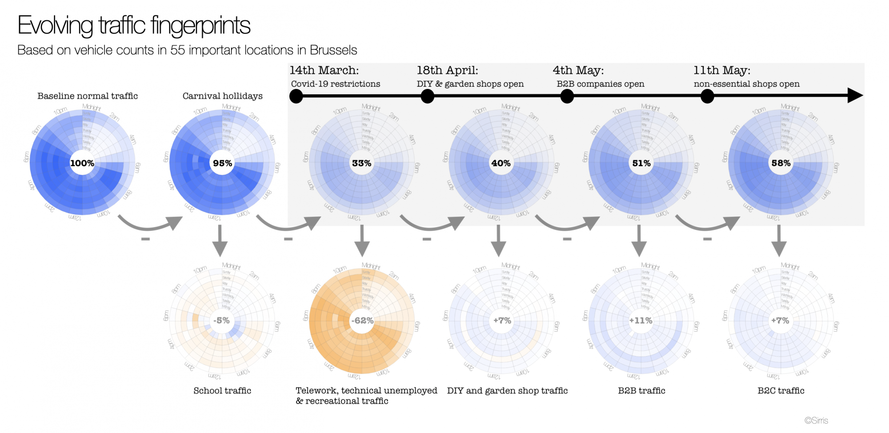

Unravelling volume patterns of Brussels traffic in times of Covid-19
Category > Blog
Tue 19 May 2020Michiel Dhont, Elena Tsiporkova, Tom Tourwé & Nicolás González-Deleito
This is the second in a series of blogs, in the context of the MISTic project executed by the EluciDATA Lab of Sirris with Macq and VUB as partners, concerning the traffic situation in Brussels in times of Covid-19 restrictions.
Our analysis is based on the open dataset of Brussels Mobility, which contains vehicle counts on 55 busy locations in the city of Brussels. In our first blog, we discovered that traffic has dramatically, but unevenly reduced in terms of locations (e.g. less reduction witnessed at the small ring of Brussels) and of time (e.g. evening peaks retained up to 80%). In this second blog, we focus on the evolution of traffic during the relaxations of the restrictions, and on providing answers to questions such as “What is the effect from each relaxation of the restrictions on the Brussels traffic?” and “Do people consistently obey the restrictions?”.
Traffic fingerprints
Since the Covid-19 restrictions are gradually being relaxed, traffic is slowly returning to 'normal' and allows us to observe the emergence of traffic volumes associated to different activities. Following the approach from the first blog, we have generated characteristic weekly fingerprints for different time periods depicted in the upper row of the figure below. Each of these fingerprints depicts the hourly traffic intensity throughout the (averaged) week. Our baseline (100% traffic volume) is constructed by averaging over 5 'regular' work-school weeks, excluding the school holidays, in January and February 2020. The second fingerprint (Carnival holidays) refers to the school vacation at the end of February, while the remaining fingerprints average traffic intensities over the different phases of the quarantine period e.g. complete lockdown between 14 March and 17 April, followed by opening of the DIY & garden shops, re-starting of companies' activities, re-opening of all other shops.

The bottom row of this figure depicts the result of subtracting each weekly ‘fingerprint’ from the fingerprint immediately on its left. This highlights better the time slots where traffic has increased (blue) or decreased (orange) compared to the previous ‘fingerprint’.
18th of April: opening of DIY shops might cause some non-essential traffic
The opening of the DIY and garden shops resulted overall in 7% of traffic increase. Since Brussels is a major city with few DIY shops, we expected to see this increase mostly for some nodes only, and for sure not for nodes located in residential areas. However, we observed a similar increase for all nodes across the entire city. In addition, it appears the traffic volume also increased with a similar amount on Sunday, when shops are closed. All this seems to suggest that probably not all observed traffic increase is due to DIY-garden shopping. Perhaps people thought that DIY-shopping could be used as a valid pretext for doing other non-essential commutes?
Notice also how the volume didn’t increase consistently for all days: Friday even has a decrease in traffic volume. This Friday is Labour Day, an official bank holiday.
4th of May: friends or family visits are preferred over going to work again
In the next fingerprint, corresponding to the week in which B2B companies could restart their activities, we see 11% average increase in traffic volume. Even though more people were allowed to go to work again, we see the highest increase in traffic volume on Sunday. This is obviously not due work activities. This particular Sunday was Mother’s Day, and people were allowed to meet with up to 4 other people. Many people seem to have seized this opportunity to go visit their relatives and friends. Note that the very clear increase of traffic on Friday is influenced by the reduced traffic on Labour Day of the week before, so this is probably not significant.
11th of May: there’s no rush to go shopping
The most recent relaxation, namely the opening of all B2C shops, results only in a moderate increase of 7% in the overall traffic that seems to be quite nicely spread over all days of the week. It appears that not everybody rushed to benefit immediately from the shopping opportunities at the same time. This has helped to avoid very busy peak periods at the shopping areas. It is also interesting to note that no increase of traffic was observed on Sunday, 17th of May. This indicates that people travelled as much as on the previous Sunday, which was Mother’s Day. Does this mean that people visited their friends on both Sundays, and not their mothers? Or they just visited their mothers again complying strictly to the rule of 4?
Project subsidized by the Brussels-Capital Region - Innoviris.